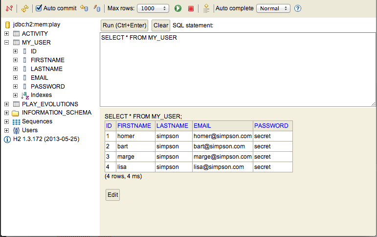
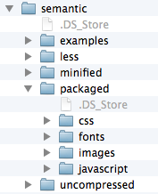
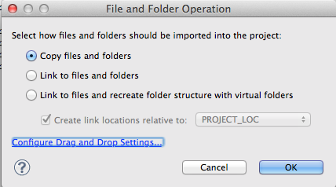
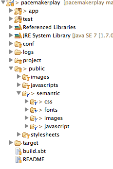
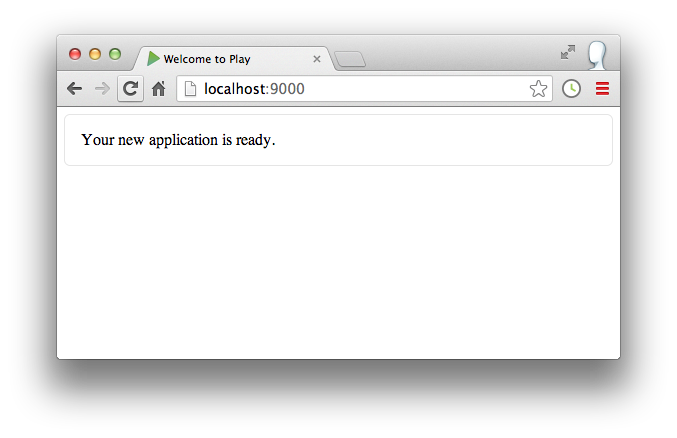
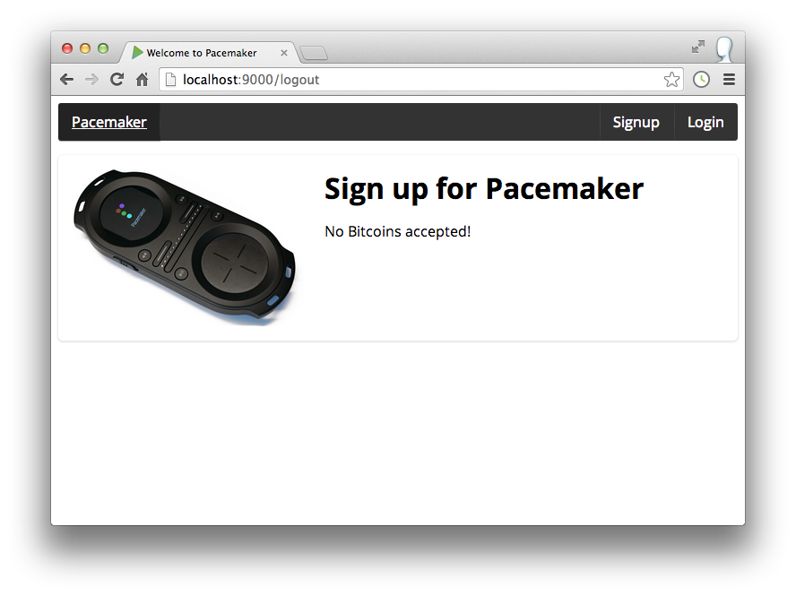
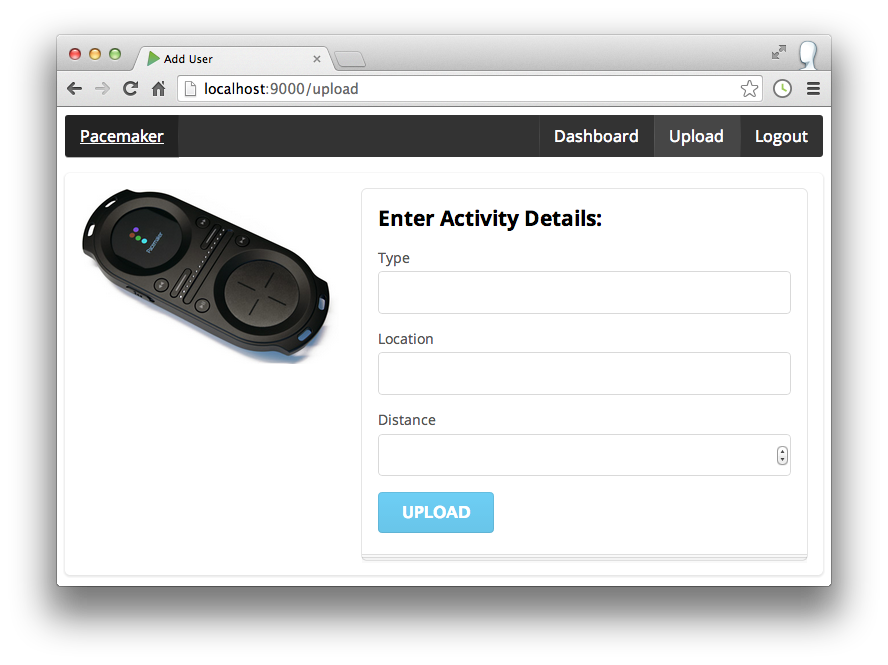
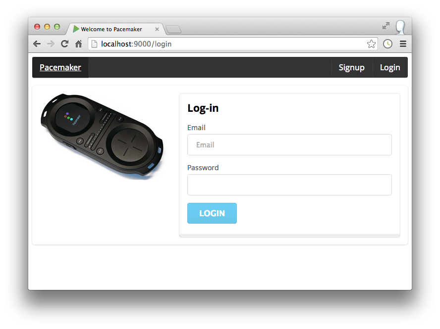
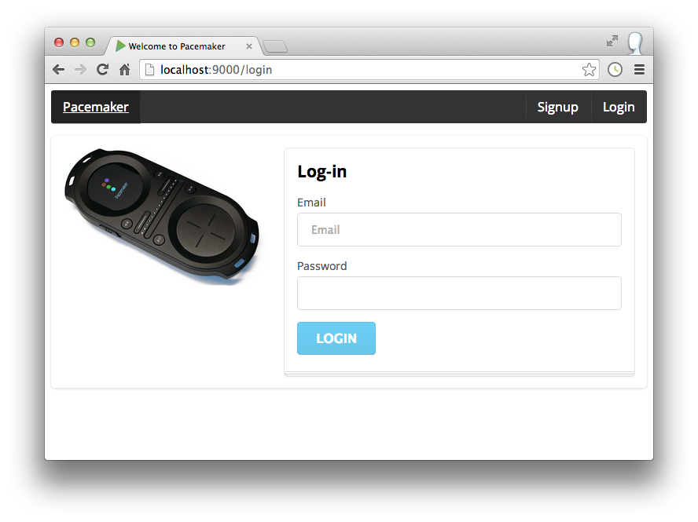

Objectives
Create a new version of pacemaker using the play framework
Install Play
For this lab, the most stable version of eclipse maybe this one:
Which bundles support for the Play Framework.
Once you have installed it, run 'check for updates' form the Help menu to make sure you have the latest version.
Download and install the latest version of the Play Framework (currently 2.2.1)
This will involve simply unzipping the archive, and placing the unzipped folder on the path.
NB: Please check your version of play! Play 2.1 (the earlier release) has a slightly different layout - so if you have this version please upgrade.
play new pacemakerplay _
_ __ | | __ _ _ _
| '_ \| |/ _' | || |
| __/|_|\____|\__ /
|_| |__/
play 2.2.1 built with Scala 2.10.2 (running Java 1.7.0_40), http://www.playframework.com
The new application will be created in /Users/edeleastar/repos/modules/agile/pacemaker/pacemaker-1.0/pacemakerplay
What is the application name? [pacemakerplay]
>
Which template do you want to use for this new application?
1 - Create a simple Scala application
2 - Create a simple Java application
> 2
OK, application pacemakerplay is created.
Have fun!- select 'Simple Java application'
Back in the console, change into the new project folder (pacemakerplay) and run the play command:
cd pacemakerplay
playthis will respond with something like this:
...
_
_ __ | | __ _ _ _
| '_ \| |/ _' | || |
| __/|_|\____|\__ /
|_| |__/
play 2.2.1 built with Scala 2.10.2 (running Java 1.7.0_40), http://www.playframework.com
> Type "help play" or "license" for more information.
> Type "exit" or use Ctrl+D to leave this console.
[pacemakerplay] $eclipse[info] About to create Eclipse project files for your project(s).
[info] Updating {file:/Users/edeleastar/repos/modules/agile/pacemaker/pacemaker-1.0/pacemakerplay/}pacemakerplay...
[info] Resolving org.fusesource.jansi#jansi;1.4 ...
[info] Done updating.
[info] Compiling 4 Scala sources and 2 Java sources to /Users/edeleastar/repos/modules/agile/pacemaker/pacemaker-1.0/pacemakerplay/target/scala-2.10/classes...
[info] Successfully created Eclipse project files for project(s):
[info] pacemakerplay
[pacemakerplay] $Import this project into eclipse - it should look something like this:

In the play console, enter
runwhich should display:
--- (Running the application from SBT, auto-reloading is enabled) ---
[info] play - Listening for HTTP on /0:0:0:0:0:0:0:0:9000
(Server started, use Ctrl+D to stop and go back to the console...)Browse to :
It should display a standard greeting page.
Models
Create a new package in app called 'models'. Introduce this version of the Activity class into this package:
package models;
import static com.google.common.base.Objects.toStringHelper;
import com.google.common.base.Objects;
import javax.persistence.Entity;
import javax.persistence.GeneratedValue;
import javax.persistence.Id;
import play.db.ebean.Model;
@SuppressWarnings("serial")
@Entity
public class Activity extends Model
{
@Id
@GeneratedValue
public Long id;
public String kind;
public String location;
public double distance;
public Activity()
{
}
public Activity(String type, String location, double distance)
{
this.kind = type;
this.location = location;
this.distance = distance;
}
@Override
public String toString()
{
return toStringHelper(this).addValue(id)
.addValue(kind)
.addValue(location)
.addValue(distance)
.toString();
}
@Override
public boolean equals(final Object obj)
{
if (obj instanceof Activity)
{
final Activity other = (Activity) obj;
return Objects.equal(kind, other.kind)
&& Objects.equal(location, other.location)
&& Objects.equal(distance, other.distance) ;
}
else
{
return false;
}
}
@Override
public int hashCode()
{
return Objects.hashCode(this.id, this.kind, this.location, this.distance);
}
public static Activity findById(Long id)
{
return find.where().eq("id", id).findUnique();
}
public static Model.Finder<String, Activity> find = new Model.Finder<String, Activity>(String.class, Activity.class);
}And also bring in this version of the User class:
package models;
import java.util.ArrayList;
import java.util.List;
import javax.persistence.*;
import play.db.ebean.*;
import com.google.common.base.Objects;
@SuppressWarnings("serial")
@Entity
@Table(name="my_user")
public class User extends Model
{
@Id
@GeneratedValue
public Long id;
public String firstname;
public String lastname;
public String email;
public String password;
@OneToMany(cascade=CascadeType.ALL)
public List<Activity> activities = new ArrayList<Activity>();
public User()
{
}
public User(String firstname, String lastname, String email, String password)
{
this.firstname = firstname;
this.lastname = lastname;
this.email = email;
this.password = password;
}
public void update (User user)
{
this.firstname = user.firstname;
this.lastname = user.lastname;
this.email = user.email;
this.password = user.password;
}
public String toString()
{
return Objects.toStringHelper(this)
.add("Id", id)
.add("Firstname", firstname)
.add("Lastname", lastname)
.add("Email", email)
.add("Passwrod", password).toString();
}
@Override
public boolean equals(final Object obj)
{
if (obj instanceof User)
{
final User other = (User) obj;
return Objects.equal(firstname, other.firstname)
&& Objects.equal(lastname, other.lastname)
&& Objects.equal(email, other.email);
}
else
{
return false;
}
}
public static User findByEmail(String email)
{
return User.find.where().eq("email", email).findUnique();
}
public static User findById(Long id)
{
return find.where().eq("id", id).findUnique();
}
public static List<User> findAll()
{
return find.all();
}
public static void deleteAll()
{
for (User user: User.findAll())
{
user.delete();
}
}
public static Model.Finder<String, User> find = new Model.Finder<String, User>(String.class, User.class);
}Initial Data
Edit conf/application.conf, locate and uncomment the following lines:
db.default.driver=org.h2.Driver
db.default.url="jdbc:h2:mem:play"
db.default.user=sa
db.default.password=""
ebean.default="models.*"Also, find a suitable place for this new entry:
applyEvolutions.default=trueNow create a new file called 'initial-data.yml' in the conf folder. Incorporate the following data:
# Users
users:
- !!models.User
email: homer@simpson.com
firstname: homer
lastname: simpson
password: secret
- !!models.User
email: bart@simpson.com
firstname: bart
lastname: simpson
password: secret
- !!models.User
email: marge@simpson.com
firstname: marge
lastname: simpson
password: secret
- !!models.User
email: lisa@simpson.com
firstname: lisa
lastname: simpson
password: secretIn the app folder (not in any package), introduce this class:
import play.*;
import play.libs.*;
import java.util.*;
import com.avaje.ebean.*;
import models.*;
@SuppressWarnings("unchecked")
public class Global extends GlobalSettings
{
public void onStart(Application app)
{
InitialData.insert(app);
}
static class InitialData
{
public static void insert(Application app)
{
if (Ebean.find(User.class).findRowCount() == 0)
{
Map<String, List<User>> all = (Map<String, List<User>>) Yaml.load("initial-data.yml");
Ebean.save(all.get("users"));
}
}
}
}If the app is running, stop it (Ctrl-D). Enter the following command on the play console:
h2-browserThis will launch a simple database viewer. Now run the app in the usual way:
runBrowse to :
Verify that, once the app is launched, the user table is populated with the above values. the h2-browser should look something like this:

Semantic UI
Visit Semantic UI :
and download the zip archive prominent on the home page. Expand the archive, which should look like this:

Open the pacemakerplay project in eclipse, and expand the 'public' folder:

Now drag and drop the 'packaged' folder from the semantic ui download, and drop it into the public folder. On the way you will get this dialog:

Make sure to select 'copy' as shown. Once it is copied over, rename the 'packaged' folder to 'semantic'

We can now include the semantic css into our ui by changing views/main.scala.html as follows:
@(title: String)(content: Html)
<!DOCTYPE html>
<html>
<head>
<title>@title</title>
<link rel="stylesheet" media="screen" href="@routes.Assets.at("semantic/css/semantic.css")">
<link rel="stylesheet" media="screen" href="@routes.Assets.at("stylesheets/main.css")">
<link rel="shortcut icon" type="image/png" href="@routes.Assets.at("images/favicon.png")">
<script src="@routes.Assets.at("javascripts/jquery-1.9.0.min.js")" type="text/javascript"></script>
<script src="@routes.Assets.at("semantic/javascript/semantic.min.js")"></script>
</head>
<body>
@content
</body>
</html>We have just entered two extra lines above - a new stylesheet included before the existing one and a javascript after the jquery include.
To test this, we will change the index file views/index.scala as follows:
@(message: String)
@main("Welcome to Pacemaker") {
<div class="ui segment">
<p> @message </p>
</div>
}This should display the greeting in a simple segment:

Introduction to segments here:
The above page is rendered in response to / request as mapped in the routes file:
GET / controllers.Application.index()... this is the controller itself:
public class Application extends Controller
{
public static Result index()
{
return ok(index.render("Your new application is ready."));
}
}See if you can follow the logic of the page creation - particularly the relationship between:
- Application.java
- index.scala.html
- main.scala.html
Passing Parameters to the View
Instead of passing a string in the Application controller:
return ok(index.render("Your new application is ready."));We could send the list of users:
List<User> users = User.findAll();
return ok(index.render(users));This will generate a syntax error - as the template is expecting a string:
@(message: String)
@main("Welcome to Pacemaker") {
<div class="ui segment">
<p> @message </p>
</div>
}Change this to expect a list:
@(users: List[User])
@main("Welcome to Play") {
<div class="ui segment">
<p> </p>
</div>
}These changes will not be fully reflected in eclipse until you manually trigger a compile, and then refresh eclipse. To do this, in the play console enter compile:
[pacemakerplay] $ compile
[info] Compiling 1 Scala source and 1 Java source to /Users/edeleastar/repos/modules/agile/pacemaker/pacemaker-1.0/pacemakerplay/target/scala-2.10/classes...
[success] Total time: 2 s, completed 21-Nov-2013 11:30:38
[pacemakerplay] $and then in eclipse select the project and in the context menu select refresh.
There will still be one error however, in the test:
public void renderTemplate() {
Content html = views.html.index.render("Your new application is ready.");
assertThat(contentType(html)).isEqualTo("text/html");
assertThat(contentAsString(html)).contains("Your new application is ready.");
}Comment this out for the moment.
Run the application and verify there are no errors.
Displaying the Users List
The templating language - used to generate the actual html pages - is a very simple subset of Scala.
The above guide - just a single page of documentation - is probably all you need to know.
Here is a revised version of index.scala.html to generate a list of users as a <ul>:
@(users: List[User])
@main("Welcome to Play") {
<div class="ui segment">
<ul>
@for(i <- 0 until users.size) {
<li>
@users(i).firstname @users(i).lastname </a>
</li>
}
</ul>
</div>
}Run the app now, and we should see the list:

or we can display this as an elegant table using semantic ui:
Here is a revised layout using a table:
@(users: List[User])
@main("Welcome to Play") {
<table class="ui table segment">
<thead>
<tr>
<th>First Name</th>
<th>Last Name</th>
</tr>
</thead>
<tbody>
@for(i <- 0 until users.size) {
<tr>
<td> @users(i).firstname</td> <td> @users(i).lastname </td>
</tr>
}
</tbody>
</table>
}
Routing to a New View
This is a revised version of index.scala.html:
@(users: List[User])
@main("Welcome to Pacemaker") {
<h1 class="ui header">Pacemaker</h1>
<table class="ui table segment">
<thead>
<tr>
<th>First Name</th>
<th>Last Name</th>
</tr>
</thead>
<tbody>
@for(i <- 0 until users.size) {
<tr>
<td> @users(i).firstname</td> <td> @users(i).lastname </td>
</tr>
}
</tbody>
<tfoot>
<tr>
<th colspan="2">
<a class="ui blue labeled icon button" href="">
<i class="user icon"></i>
Add User
</a>
</th>
</tr>
</tfoot>
</table>
}It includes a header:
and a button:
which is positioned at the last row:
The href in the button is blank, so we can suggest a new route:
<a class="ui blue labeled icon button" href="/users/adduser">We can specify a matching route + controller action in conf/routes:
GET /users/adduser controllers.Application.addUser()To wire this up, we need a new method in the Application controller:
public static Result addUser()
{
return ok(adduser.render());
}and this is a new view called adduser.scala.html:
@()
@main("Add User") {
<p> Add User Form </p>
}As you have made changes to the view - you will need to compile the project manually ('compile' command in play console), and then refresh the project in eclipse.
When you run the app the new view should be displayed.
Form Design
Forms can be assembled cleanly in Semantic UI:
Here is a replacement for adduser.scala.html:
@()
@main("Add User") {
<div class="ui form segment">
<div class="two fields">
<div class="field">
<label>First Name</label>
<input placeholder="First Name" type="text" name="firstname">
</div>
<div class="field">
<label>Last Name</label>
<input placeholder="Last Name" type="text" name="lastname">
</div>
</div>
<div class="field">
<label>Email</label>
<input placeholder="email" type="text" name="email">
</div>
<div class="field">
<label>Password</label>
<input type="password" name="password">
</div>
<input type="submit" class="ui blue submit button" value="Submit">
</div>
}
In order to send this to our application, we would need to encapsulate it on a standard <form> element, and define associated action and method attributes:
<form action="/users/submituser" method="POST">
...
</form>Place the above around our outer div.
For this to work, we will need a route:
POST /users/submituser controllers.Application.submitUser()and a corresponding action:
public static Result submitUser()
{
return redirect ("/");
}This should work - and pressing the submit button should take us back to the users list page.
Form Input
Form handling in Play is well supported, and does not require significant boilerplate code.
In the Application controller, define a new static attribute:
private static final Form<User> userForm = Form.form(User.class);This will be used to read data and populate a User object. Now we can finalise the submitUser() method:
public static Result submitUser()
{
Form<User> boundForm = userForm.bindFromRequest();
User user = boundForm.get();
user.save();
return redirect ("/");
}This method recovers the user entered data, reads it into a new User object, which we then save. The only requirement is that we keep the names of the user members directly aligned with the 'name' attributes in the <input> elements in the form:
public class User extends Model
{
//...
public String firstname;
public String lastname;
public String email;
public String password;
//...
} //...
<input placeholder="First Name" type="text" name="firstname">
//...
<input placeholder="Last Name" type="text" name="lastname">
//...
<input placeholder="email" type="text" name="email">
//...
<input type="password" name="password">
//...This is already the in place, so we should now have a simple UI, listing out the users. If we press the "Add User" button, then we should see a form which, if filled out, will take us back to the user page - to now include a new user.
Links
Our list of users could be extended to include links so we can inspect each users details.
First introduce a new supporting route:
GET /users/showuser/:id controllers.Application.showUser(id : Long)Then the template, call showuser.scala.html:
@(user : User)
@main("user") {
}and finally the matching controller action:
public static Result showUser(Long id)
{
User user = User.findById(id);
return ok(showuser.render(user));
}This is an example of a paramaterised route (it take an id) which serves an html page. We can now enable the user list page such that each user is a link (with the correct id) to this route.
Edit index.scala.html - and rework the for loop as follows:
@for(i <- 0 until users.size) {
<tr>
<td> <a href="/users/showuser/@users(i).id"> @users(i).firstname </a> </td>
<td> @users(i).lastname </td>
</tr>
}Notice how we embedding the users first name in an<a> tag - with the correct route.
Run this now - and the first names of each user should be a link, taking us to a blank page. Here is a version of showuser.scala.html` that renders some of a user details:
@(user : User)
@main("user") {
<div class="ui form segment">
<div class="two fields">
<div class="field">
<label>First Name</label>
<input value= @user.firstname type="text" name="firstname" readonly>
</div>
<div class="field">
<label>Last Name</label>
<input value= @user.lastname type="text" name="lastname" readonly>
</div>
</div>
<div class="field">
<label>Email</label>
<input value= @user.email type="text" name="email" readonly>
</div>
</div>
}This should work now as expected.
Solution so far
This is an archive of the project as we have built it so for:
Enhanced UI Version
This is anarchive can replace the version you may have been developing during this lab:
To build it, download and expand, and from the expanded folder run:
- play
- compile
- eclipse
- h2-browser
- run
And browse to :
Expect to see an UI like this:


 

Explore
Explore the source in more detail. It exhibits puts to use the techniques we have explored in this lab.
Focus on these sources here:
Routes:
- conf/routes
Models
- models/User.java
- models/Activity.java
Controllers:
- app/controllers/Accounts.java
- app/controllers/Dashboard.java
Views
- views/accounts_login.scala.html
- views/accounts_signup.scala.html
- views/dashboard_main.scala.html
- views/dashboard_uploadactivity.scala.html
- views/main.scala.html
- views/welcome_main.scala.html
- views/welcome_menu.scala.html